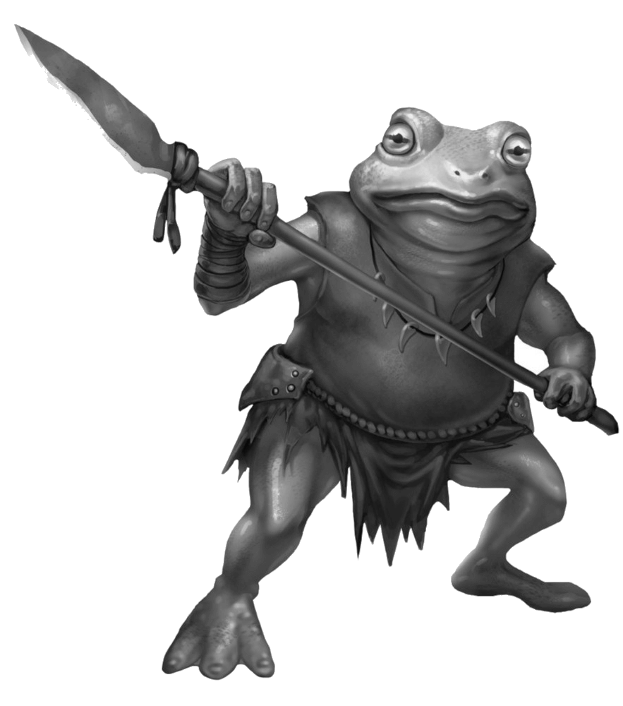

Scarlet Horizons
Bullywug

• No. Enc: 1 (2d3)
• Alignment: Chaotic
• Movement: 30'
• Armor Class: 7
• Hit Dice: 2+2 (typically 8-13 HP)
• BAB +3
• Attacks: 2 - bite & spear
• Damage: Bite (1d4+1), spear (1d6+1)
• Save: F3
• Morale: 9
• Hoard: 2d4 chroma, 1d4+4 royals, 1d4+2 copper (30% it's Red Cuprous)
Experience Yielded: 225 per
Anytime five or more bullywug are found together, one of them will be a 4+3 HD specimen with 31 HP and with 2d4+4 royals, 3d4+4 chroma, 2d4+6 copper (35% it's Red Cuprous). This leader will have the same Morale and saving throws as its fellows, but is BAB +5 and it's spear deals 1d6+2. A defeated leader bullywug is worth 275 xp.